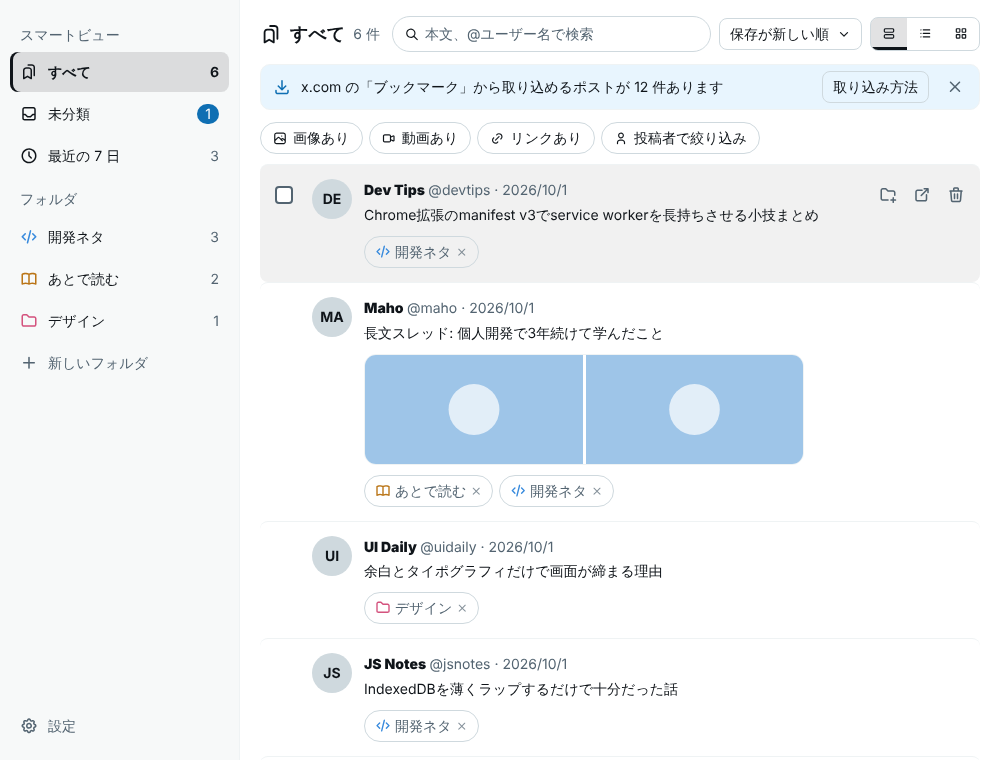
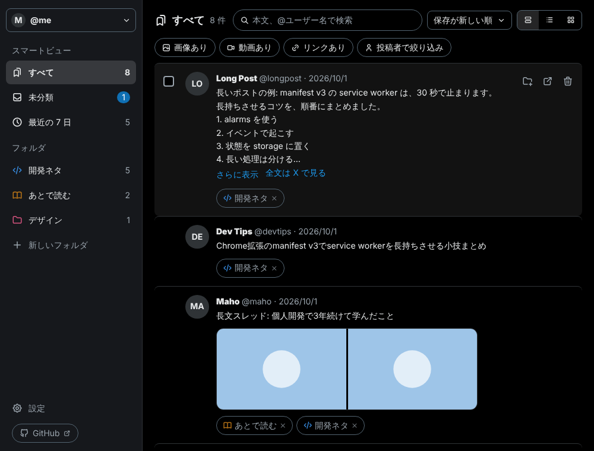
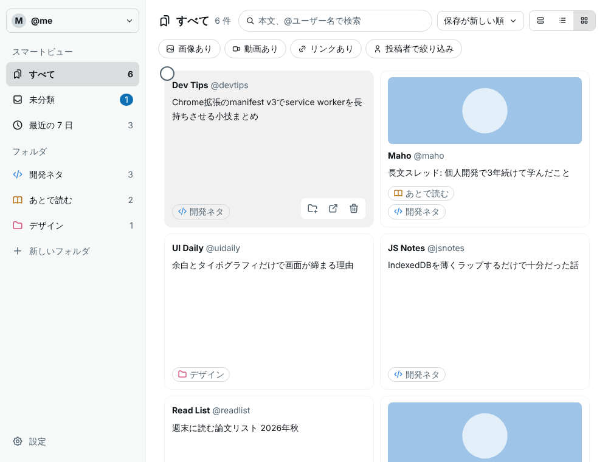
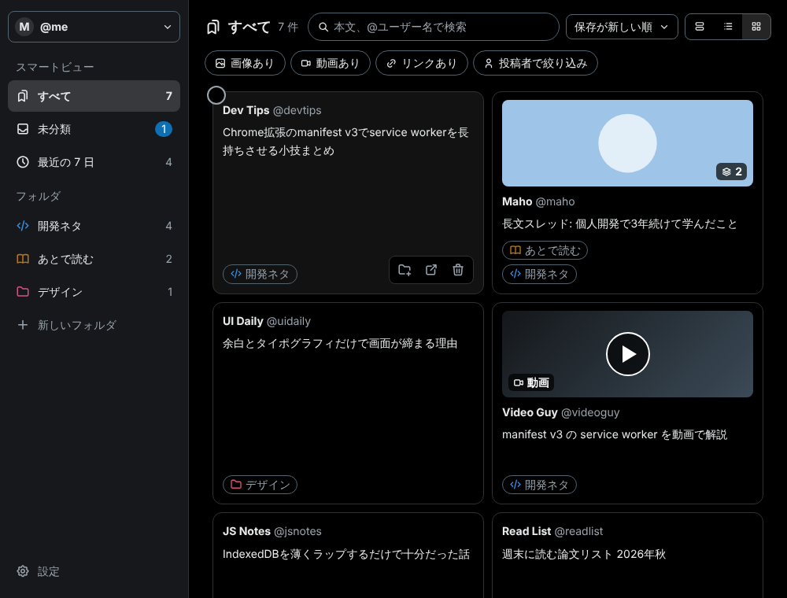
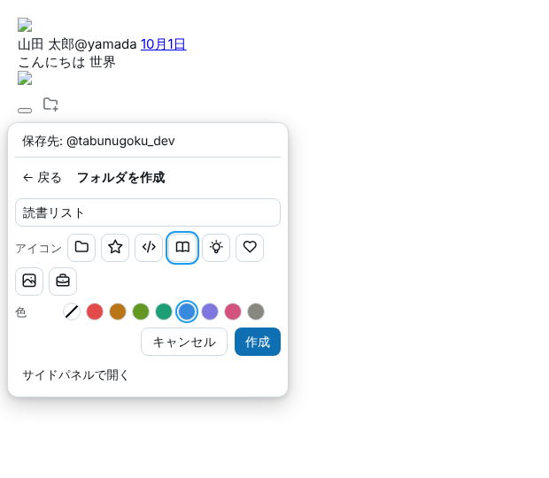
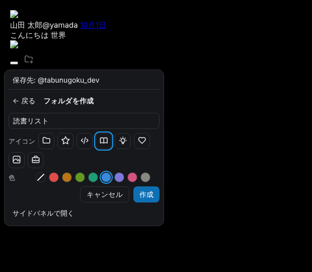

ポストを、好きな名前・アイコン・色のフォルダに分けられる Chrome 拡張機能です。データは、あなたのパソコンの中だけに保存します。
見た目は X に近く、操作は迷わない。データは端末の中。
名前・アイコン・色を自由に選べます。1 つのポストを、複数のフォルダに入れることもできます。
ブックマークボタンの横に、フォルダを選ぶ小さなメニューが出ます。画面を離れずに分類できます。
X 風のカード、リスト、グリッドを切り替えられます。サイドパネルでも使えます。
本文と投稿者の検索、並べ替え、「画像あり」「動画あり」「リンクあり」の絞り込み、最近 7 日のスマートビュー。
動画には再生ボタンと「動画」の札、複数枚の画像には枚数の札が付きます。
たたまれたポストの全文を読み取り、PostShelf でたたむ・広げるを切り替えられます。本文中のリンクも開けます。
X のアカウントごとに、フォルダとポストを分けて管理します。
既存のブックマークを、確認のうえで自動取り込み (任意)。JSON でのエクスポート / インポートにも対応します。
保存先はブラウザの中だけ。外部への送信も、解析も、アカウント登録もありません。
実際の画面です (画面のポストは、サンプルのデータです)。
フォルダと件数を、左に。ポストは、X に近い見た目で読めます。


画像を眺めながら選べます。動画と複数枚の画像は、札で見分けられます。


ブックマークボタンの横から、フォルダを選ぶ・作る。


Chrome ウェブストアでは配布していないため、ZIP を取得して手動で読み込みます (約 3 分)。
GitHub の Releases から postshelf-1.1.0.zip をダウンロードします。
固定の場所のフォルダに展開します。削除や移動をしない場所にしてください。
chrome://extensions を開き、右上の「デベロッパー モード」をオンにします。
「パッケージ化されていない拡張機能を読み込む」で、展開したフォルダを選びます。
3 つの場面ごとに、手順を示します。
得意なことと、苦手なことを、そのまま書きます。2026-10-08 時点で、各ツールの公開ページに書かれていた内容に基づきます。
| PostShelf | 小さなローカル型 (ufofo、XOrganize など) | クラウド型 (Dewey、Tweetsmash など) | |
|---|---|---|---|
| 価格 | 無料、件数の上限なし | 無料が中心 | 無料枠に上限あり。有料プランあり |
| データの置き場所 | 端末の中だけ | 端末の中が中心 | クラウド、アカウントが必要 |
| フォルダの名前・アイコン・色 | すべて自由 | 名前が中心 (記載なし) | フォルダ・タグ (アイコンや色は記載なし) |
| 1 ポストを複数フォルダに | できる | 記載なし | ツールによる |
| 表示 | カード / リスト / グリッド、サイドパネル | 記載なし | Web アプリ中心 |
| 複数の X アカウント | アカウントごとに分けて管理 | 記載なし | プランにより上限 |
| クラウド同期 · モバイル · AI | ない | ない | ある (一部は有料) |
| 書き出し形式 | JSON のみ | JSON / CSV など | CSV / PDF / Notion ほか |
| 過去のブックマークの取り込み | 自動取り込み (任意、1 回の上限あり) | 自動スクロール型もあり | 全件の取り込みに対応するものが多い |
| 配布方法 | 手動インストール (Chrome 114+ のみ) | Chrome ウェブストアが中心 | Chrome ウェブストアが中心 |
| ソースコード | MIT で公開 | 記載なしが多い | 非公開が多い |
表の「記載なし」は、公開ページに書かれていなかったという意味で、機能がないことの証明ではありません。X の仕様や各ツールの内容は変わります。(モック: 公開前に、各ツールの現在の内容と照らして確認します)